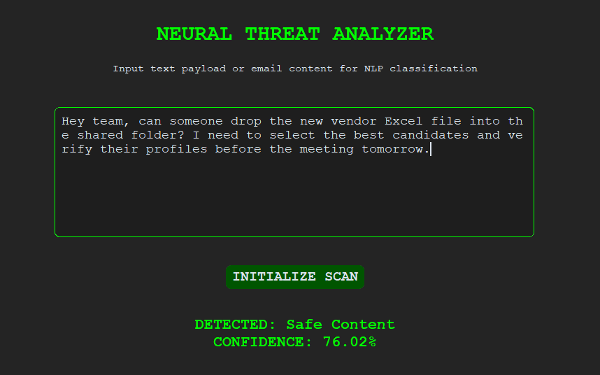
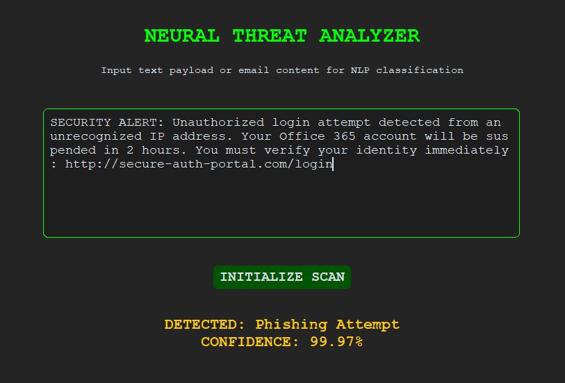
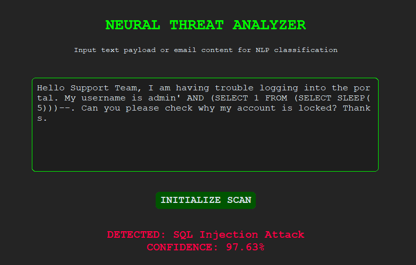

A 6-page technical audit exploring business impact, hybrid threat detection methodology, and strategic cybersecurity roadmaps.
Traditional filters often depend on static keyword detection, making them vulnerable to obfuscated phishing attempts and structured payload attacks. This project addresses that limitation by combining language-based signals with structural indicators to improve threat classification.
A custom dataset was assembled by merging modern phishing corpora, safe corporate communication, and SQL injection payloads. A strict undersampling strategy ensured balanced representation across the three target classes.
The detection engine uses a hybrid feature pipeline that combines semantic representation with handcrafted structural indicators.
Text is normalized and cleaned using SpaCy. An input-length control mechanism safely handles oversized payloads without exhausting system memory.
A TF-IDF vectorizer captures vocabulary and n-gram patterns, while engineered binary features identify structural signals such as URLs, SQL operators, and urgency markers.
Logistic Regression was selected for its performance in sparse high-dimensional data and its ability to provide probabilistic confidence scores for downstream analysis.
A desktop application built with CustomTkinter enables real-time evaluation of suspicious payloads with color-coded threat outputs.



A Streamlit dashboard was developed to monitor performance, analyze prediction behavior, and improve interpretability for technical stakeholders.
Tracks accuracy, cross-validation results, and class-level metrics to assess model stability over time.
Uses confusion matrices and misclassification logs to identify false positives and improve detection thresholds.
Highlights the lexical and structural signals that contribute most strongly to predictions, improving interpretability in model decision-making.
During testing, a feature dominance bias was observed around URL-related signals. Because phishing datasets strongly associate links with malicious intent, benign URLs may trigger false positives when isolated from contextual language.
Future iterations will focus on reducing feature bias and strengthening contextual awareness: